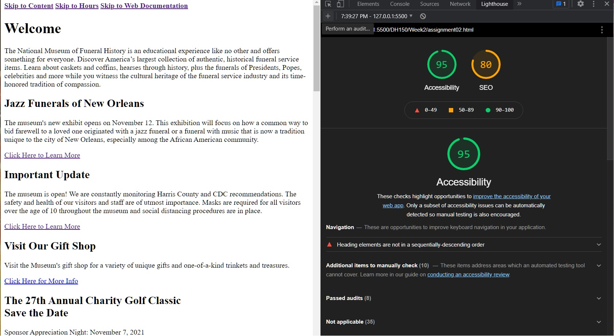
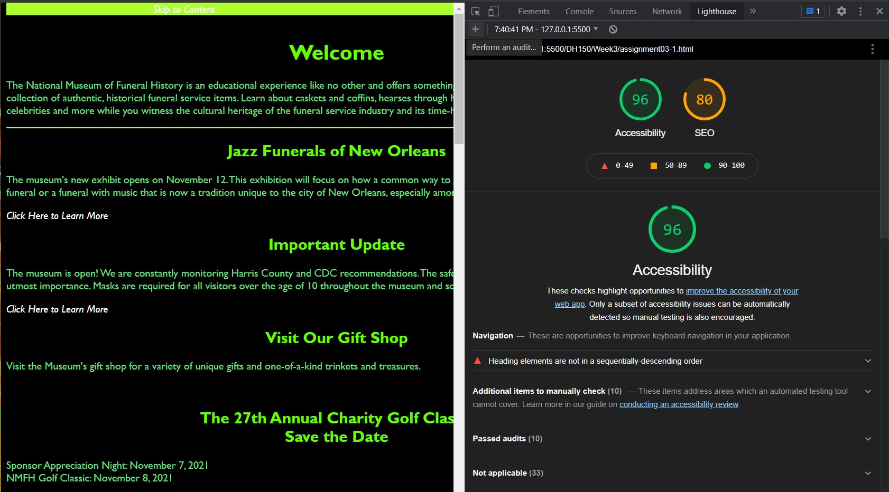
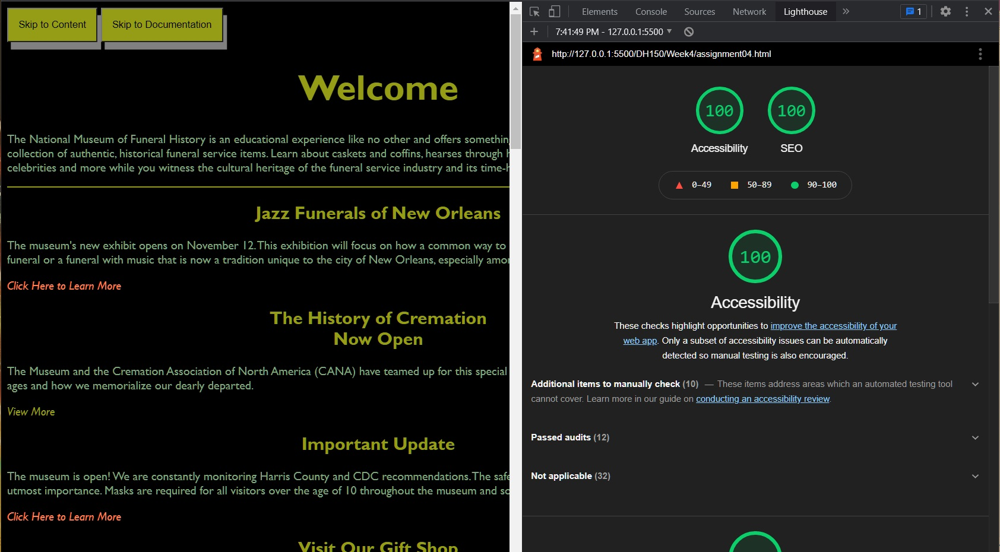
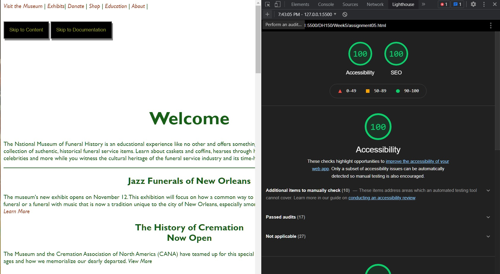

1) National Museum of
Funeral
History,
Accessibility (95), SEO (80)
The following documentation tests and improves web-accessibility of the official National Funeral History Museum and as shown in four markup websites.
I started research about the museum websites and narrowed down into five museums for accessibility/seo
audit. I used a Chrome Development tool named lighthouse to diagnose the accessibility and SEO score of
those websites.
1) National Museum of
Funeral
History,
Accessibility (95), SEO (80)
2) Museum of
Death,
Accessibility (93), SEO (80)
3) International
Cyptozoology Museum,
Accessibility (100), SEO (100)
4)
Museum of Broken Relationships,
Accessibility (68), SEO (70)
5)
International Banana Museum,
Accessibility (93), SEO (80)
While looking through the issues in each of the website's scores, I noticed what each museum needed improvement on. International Banana Museum could have improved their score if they added a < meta name="viewport"> tag which would have optimize their website for mobile screens by announcing a meta description that might be included in search results to concisely summarize page content. Museum of Broken Relationships could have increased the contrast ratio between the background and foreground colors and addded alternate text for screen readers. International Crytozoology Museum Ways could have organized their heading elements in a sequentially-descending order to make it easier for screen readers as well as add a [lang] attribute so screen readers understand whether or not the page is in its default language. Museum of Death could add labels to their form elements to ensure that the form controls are announced properly by screen readers and also enable zooming for people with visual impairments. National Funeral Museum could have added descriptive link texts which would help search engines understand their content as well as add crawlable links to ensure that the `href` attribute of anchor elements links to an appropriate destination, so more pages of the site can be discovered.
I chose to improve on the National Museum of Funeral History . One of the reasons why I chose this particular website is because I noticed that it was one of museums I had picked with a lower than average accessibility and SEO scores. I also noticed that this website had a lot of accessibility issues that I was at the time unfamiliar with. In order to familiarize myself with SEO and Accessibility criteria, I chose to challenge myself with this particular website. Here are the process as to how I improved the accessibility and SEO scores of each:

After running lighthouse for the National Museum of Funeral History, I noticed a
score of 74 for accessibility. After delving deeper into what was causing this issue, I noticed the
following issues affected the overall score:
- low color contrast
- nonsequential heading elements
- no [lang] attribute
- images without [alt] attributes
The original accessibility score is 74 and the original SEO score is 73. I noticed the issues were
nonsequential heading elements and the no [lang] attribute. After fixing the semantic style and
adding alt attributes to the scores' images as well as adding sequential heading elements and also
adding more descriptive text to some of the
Museum's Read More/Learn More links, the accessibility score went up to 100, and SEO score went up
to 80.
The SEO score doesn't go up as high as the accessibility score because this is a markup of the site
and
therefore it won't get as much traffic as the original. I revisted this after the graded rubric to
fix errors
I had made in the semantic structure.

For assignment03, I experimented with four different color schemes and
varying animations for this segment of the project. Version 01, the dark mode, was the best version
with a black and lime green color scheme. Initially, I did mess up setting the link colors. I had a
black
background and a black a:anylink color. I have since fixed this issue after revisting the rubric.
The accessibility
score is 96 and SEO score is 80 for this one.
For Version 02, I added an animation that slowly changed the color of the header from blue to red.
The
color used for this one was white, cyan, and a dusty rose red. Version03 had a red and yellow theme
with a
flashing yellow animation for the headers. Version04 had a translucent box that would change colors
and used the colors
red, purple, blue, and black. Versions02-04 all had accessibility scores 0f 90 and SEO scores 0f 80.
A running theme I noticed with the others was
how hard it was to accommodate for all the different colors and their contrast ratios. Whenever, I
would fix
one contrast ratio issue, I noticed that it would create another color contrast ratio issue. I
learned to keep
the color palette simple for the greatest SEO and accessibility scores.

I chose to rework the first version of my css altered assignment 3 now with
invisible buttons that appear only appear by tabbing. One of the first things I fixed was the color
scheme. Originally I had shown a link color that had a very low contrast ratio with the background.
This time, I used wave.webaim.org to help me gauge whether or not the contrast ratios were high
enough. This time around, the ratios were high enough. For this assignment, there needs to be at
least 10 interactive items. I only had 8 when I started. I added another invisible bybass block that
skips to this web documentation. Then, I added interactive links to the original navigation bar that
only had text. Afterwards, I added social media icons and added links to those icons as well. Since
there are well over 10 interactive items now, I hid the navigation bar. After these additions, I ran
Lighthouse for the new accessibility and SEO score which were 91 and 70, respectively. For
accessibility, I made the heading sequential and added accessible names to the buttons to bring the
score up to 100. For SEO, I added descriptive links, a < meta name="viewport">, and a meta
description to bring the score up to 100. After bringing the automated testing scores up, I
began the manual testing by tabbing through the crawlable links and making sure the focus tab
did what I specified and made changes accordingly. I ended up adding a grayscale filter to the
links to make it more obvious visually that the tabs were being selected. I didn't make any
revisions to
this version, after revisiting the rubric.

I chose to improve assignment04 by adding a text increasing icon and a text
decreasing icon as well as a toggleable dark mode button. After following the demo and adding aria
labels. I noticed that the Accessibility score went down because of the low contrast between the
white background and the font color, So I changed the font color to a darker shade using
wave.webaim.org to help me pick a color. I also made the navigation bar visible this time. This all
improved the Accessibility Score and brought it back to 100, but SEO went down to 91 from 100
because of a robot.txt error. I didn't entirely understand this error, but after I made sure all the
links had "https://," this error was fixed, bringing the SEO score to 100 again. I did more testing
with ARC Toolkit and found no major errors. Afterwards, I used the Chrome screen reader extension
and tabbed through my website and didn't find any major errors there either since the aria-labels
were called out properly. All of this worked for me in live server.
But when I went to submit it, it stopped working. After looking at the graded rubric, however, I
fixed the buttons.
I haven't taken too many Digital Humanities classes, so I only had a vague understanding of what went into designing websites. Now I have more of an insight into what goes into curating website usuability tests and audits. The original National Museum of Funeral History had an accessibility score of 74 and an SEO of 73 with main issues being not having [alt] text for images, low color contrast ratio, and nonsequential heading elements. After learning how many points each issue deducted from web.dev, I learned how important it is to have alternate text for images or at learn an empty alt attribute to show that they are decorative images. Color contrast and nonsequential heading elements only deduct 3 points each while not having alt text deducts 10 points. I made sure to keep these aspects in mind while designing Assignment05 since points affecting accessibility also affect SEO scoring. Assignment05 and even this project documentation both have SEO and accessibility scores of 100. However, having perfect scores for automatic tests doesn't mean anything if websites fail manual testing as shown here. I also went through manual tests for both the official site and also for this project documentation site to see if there were any major issues. I didn't find any for either site, but I found 27 errors for the National Museum of Funeral History, but only one error for this project documentation on ARC Toolkit. As shown here. Overall, I learned a lot about website accessibility and just how important it is. I also learned a lot about my own strengths and weaknesses when it comes to coding. I have a grasp on CSS, however, I still find JavaScript confusing at times and that is something I need to work on.
{kind=link}
{kind=link}